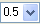
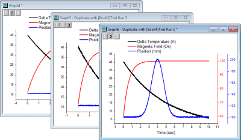

Diagrammvorlagen und Stapelzeichnen
GSB-template-theme-batchplotting
In dieser Lektion erfahren Sie etwas über Diagrammvorlagen und wie Sie per Stapelverarbeitung zeichnen.
Diagrammvorlagen
Sie beginnen mit der Projektdatei, die Sie in Lektion 1: Mein erstes Diagramm gespeichert haben. Klicken Sie auf das Diagrammfenster, um es auszuwählen.
 | Sie können die zuletzt gespeicherten Projektdateien schnell über die Liste unter Datei: Zuletzt verwendete Projekte öffnen. |
- Klicken Sie auf die X-Achse und in der Popup-Minisymbolleiste auf die Schaltfläche Gegenüberliegende Achse zeigen, um die obere X-Achse zu zeigen. Tun Sie dasselbe mit der Y-Achse, um die rechte Y-Achse zu zeigen.
- Speichern Sie das Diagramm jetzt als Vorlage. Klicken Sie mit der rechten Maustaste auf die Titelleiste des Diagrammfensters und wählen Sie im Kontextmenü Template speichern unter...
- Legen Sie im Dialog den Vorlagenname mit MeinLiniendiagramm fest und klicken Sie auf OK, um die Vorlage zu speichern.
- Erzeugen Sie nun eine neue Datenspalte. Aktivieren Sie das Arbeitsblatt und klicken Sie auf die Schaltfläche Neue Spalte hinzufügen
 auf der Symbolleiste Standard, um ganz rechts eine neue Spalte hinzuzufügen.
auf der Symbolleiste Standard, um ganz rechts eine neue Spalte hinzuzufügen.
- Klicken Sie in die Zelle F(x) dieser neuen Spalte und geben Sie Folgendes ein:
=Mmovavg(B,2)
Beachten Sie, wenn Sie "=" und dann einen Ausdruck eingeben, dass die möglichen Ausdrücke aufgelistet werden und Sie dadurch die Option haben, den Ausdruck automatisch zu vervollständigen. Ein Benachrichtungsfeld mit einer einfachen Beschreibung des Ausdrucks wird angezeigt.
| Sie können eine Spalte auch mit einem Ausdruck füllen, indem Sie mit der rechten Maustaste auf die Zelle F(x) dieser Spalte klicken und Dialog öffnen... im Kontextmenü auswählen.
Verwenden Sie das Menü Formel: Sample laden in diesem Dialog, um verschiedene Beispiele zum Festlegen von Spaltenwerten anzuzeigen. Das Menü Funktion bietet eine große Auswahl von Funktionen. Sie können mit der Schaltfläche Suchen  auch nach geeigneten Funktionen suchen. auch nach geeigneten Funktionen suchen.
|
- Drücken Sie die Taste Enter, um einen Datensatz der modifizierten gleitenden Durchschnitte unter Verwendung der Daten aus Spalte B, beginnend bei Zeile 2, auszugeben. Geben Sie MMovAvg in die Zelle Langname der Spalte ein.
- Klicken Sie auf den Header von Spalte C, um die gesamte Spalte auszuwählen. Wählen Sie im Menü Zeichnen: Anwendervorlagen und im Ausklappmenü die Vorlage Mein Liniendiagramm, die Sie zuvor erstellt haben. Ein neues Diagramm wird mit Hilfe der Daten aus Spalte C erstellt.
Stapelzeichnen
In diesem Abschnitt soll das Zeichnen per Stapelverarbeitung durchgeführt werden, indem zuerst ein Diagramm gezeichnet und dann dieses Diagramm unter Verwendung von anderen Daten geklont wird.
- Gehen Sie zum Projekt Explorer. Klicken Sie im oberen Bedienfeld mit der rechten Maustaste auf die Hauptverzeichnisebene und wählen Sie Neuer Ordner.
- Geben Sie dem Ordner den Namen Stapelzeichnen. Klicken Sie auf den leeren Ordner, um ihn zu öffnen.
- Wählen Sie Hilfe: Ordner öffnen: Programmordner, um den Origin-Programmordner zu öffnen und zum Unterordner \Samples\Import and Export\ zu navigieren und auch diesen zu öffnen. Drücken Sie die Shift-Taste und wählen Sie die folgenden drei Dateien:
- Ziehen Sie die ausgewählten Dateien per Drag&Drop in den Origin-Arbeitsbereich. Die ausgewählten Dateien werden in drei neue Arbeitsmappen importiert.
- Wählen Sie eine der Arbeitsmappen, klicken Sie dann auf den Header von Spalte B und ziehen Sie die Maus zur Spalte D, um alle drei Spalten zu markieren. Wählen Sie dann im Menü Zeichnen > Mehrere Felder/Achsen: 3Y, Y-YY.
| Origin bezieht die X-Spalte links von der Auswahl und zeichnet die ausgewählten Daten gegen die 1. Spalte im Arbeitsblatt. |
- Klicken Sie auf eine Zeichnung und ändern Sie in der Minisymbolleiste den Diagrammtyp in Linie. Dazu verwenden Sie die Auswahlliste Diagramm ändern in
 .
.
Klicken Sie auf die Zeichnung und ändern Sie in der Minisymbolleiste die Breite in 3. Dazu verwenden Sie die Auswahlliste Liniendicke .

Tun Sie dasselbe mit zwei anderen Zeichnungen, um das folgende Liniendiagramm zu erhalten.
- Klonen Sie jetzt dieses Diagramm unter Verwendung der Daten in den anderen Arbeitsmappen. Klicken Sie mit der rechten Maustaste auf die Titelleiste des Diagrammfensters. Wählen Sie Stapelzeichnen.... Der Dialog Arbeitsmappe auswählen wird geöffnet.
- Legen Sie im Dialog die Einstellungen, wie im Bild unten zu sehen, fest. Stellen Sie sicher, dass Sie die Mappen markieren.
| Sie können die Auswahlliste Zeichnungsspalten stimmen überein mit entsprechend festlegen, um Arbeitsblätter in dem Projekt zu finden, die mit der Datenkonfiguration des aktuellen Diagramms übereinstimmen. |
- Klicken Sie auf OK. Wenn Sie dazu aufgefordert werden, die Achsen neu zu skalieren und alle Daten zu zeigen, wählen Sie Ja. Klicken Sie auf OK. Es werden zwei ähnliche Diagramme mit den Daten aus den zwei anderen Arbeitsblättern erstellt.

- Klicken Sie auf die Schaltfläche Projekt speichern
 auf der Symbolleiste Standard, um Ihr modifiziertes Projekt zu speichern.
auf der Symbolleiste Standard, um Ihr modifiziertes Projekt zu speichern.